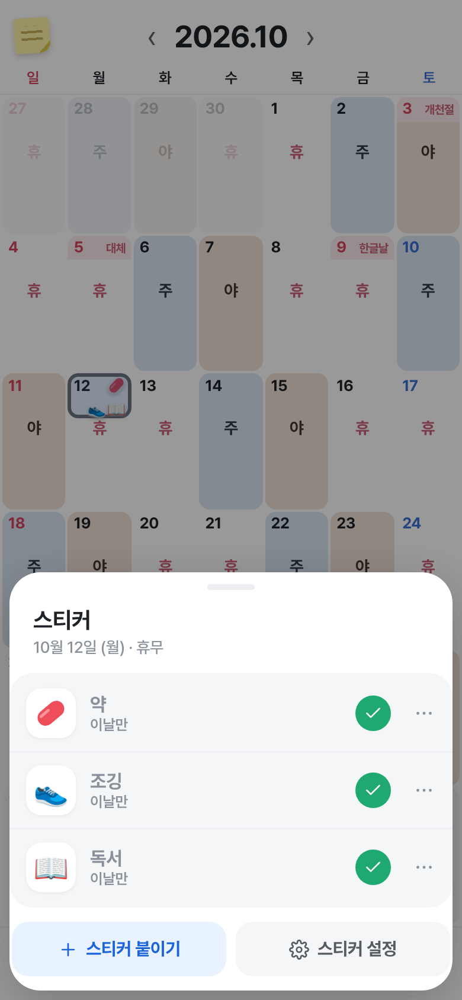

지금

바꾼 뒤
스티커
10월 12일 (월) · 휴무
💊
약
매일 · 하루 2번 · 오전 8시 · 오후 8시
👟
조깅
쉬는 날만
📖
독서
이날만
스티커 붙이기
스티커 설정
· 스티커마다 한 줄: 그림 · 이름 · 언제(매일 · 쉬는 날만 · 이날만) · 오른쪽 체크
· 줄을 누르면 완료 ↔ 취소 (큰 "완료 취소" 버튼 뺌) · 완료한 줄은 이름이 흐려짐
· 약처럼 하루 여러 번이면 동그라미가 횟수만큼(●○) — 누를 때마다 하나씩 채움, 다 채운 뒤 누르면 비움
· 꾹 누르면 지금처럼 반복 · 알림 고치기
· 아래: 스티커 붙이기(연파랑) · 스티커 설정 두 버튼